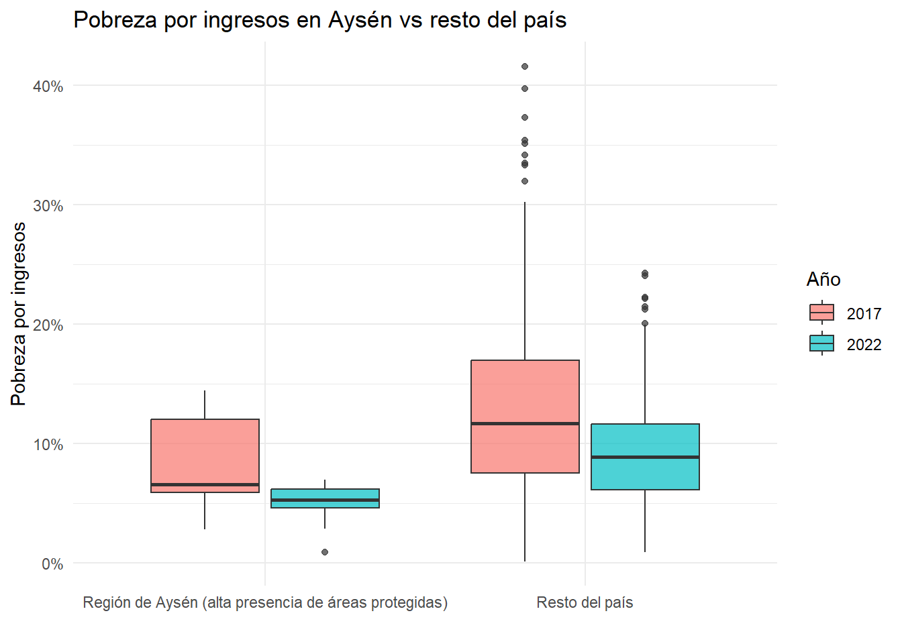

¿Influyen las áreas protegidas en la pobreza comunal? Un caso exploratorio en la Región de Aysén
Author
Nicolás Bobadilla Jara
1. Introducción
Chile ha avanzado en la creación de Parques y Reservas Nacionales durante las últimas décadas. Una de las regiones donde este proceso se ha intensificado es Aysén, caracterizada por una combinación única de aislamiento geográfico, baja densidad poblacional y una alta proporción de territorio protegido. Por lo general las Areas Protegidas se establecen en lugares alejados de zonas urbanas, donde no puedan existir conflictos de interés. Es por eso que se vuelve interesante el comportamiento social con respecto a estas declaraciones.
En este informe exploro la siguiente pregunta:
¿La presencia de áreas protegidas coincide con patrones distintos de pobreza entre 2017 y 2022?
La idea no es inferir causalidad, sino comparar tendencias generales entre:
Comunas de Aysén, donde la presencia de parques y reservas es alta.
Resto del país, como grupo de comparación amplio.
Este análisis es exploratorio y busca describir diferencias de nivel y de evolución en dos dimensiones de pobreza:
La base resume parques y reservas nacionales de la región, permitiendo justificar el “tratamiento”.
Code
areas_protegidas %>%count(categoria, name ="cantidad")
# A tibble: 2 × 2
categoria cantidad
<chr> <int>
1 Parque Nacional 7
2 Reserva Nacional 9
Code
areas_protegidas %>%head(10)
# A tibble: 10 × 4
region nombre_area categoria fuente_resumen
<chr> <chr> <chr> <chr>
1 Aysén del General Carlos Ibáñez del Cam… Parque Nac… Parque N… Ruta de los P…
2 Aysén del General Carlos Ibáñez del Cam… Parque Nac… Parque N… Ruta de los P…
3 Aysén del General Carlos Ibáñez del Cam… Parque Nac… Parque N… Ruta de los P…
4 Aysén del General Carlos Ibáñez del Cam… Parque Nac… Parque N… Ruta de los P…
5 Aysén del General Carlos Ibáñez del Cam… Parque Nac… Parque N… Ruta de los P…
6 Aysén del General Carlos Ibáñez del Cam… Parque Nac… Parque N… Ruta de los P…
7 Aysén del General Carlos Ibáñez del Cam… Parque Nac… Parque N… Ruta de los P…
8 Aysén del General Carlos Ibáñez del Cam… Reserva Na… Reserva … Ruta de los P…
9 Aysén del General Carlos Ibáñez del Cam… Reserva Na… Reserva … Ruta de los P…
10 Aysén del General Carlos Ibáñez del Cam… Reserva Na… Reserva … Ruta de los P…
2.3 Definición de tratamiento
Code
pobreza %>%count(tratamiento, name ="numero_comunas")
# A tibble: 2 × 2
tratamiento numero_comunas
<chr> <int>
1 Región de Aysén (alta presencia de áreas protegidas) 9
2 Resto del país 322
La Región de Aysén tiene pocas comunas, pero una presencia significativa de áreas protegidas que influye en su configuración territorial.
3. Exploración gráfica
3.1 Pobreza por ingresos: comparación 2017 vs 2022
Code
pobreza_long_ingresos <- pobreza %>%select(nombre_comuna, tratamiento, pobreza_ingresos_2017, pobreza_ingresos_2022) %>%pivot_longer(cols =starts_with("pobreza_ingresos_"),names_to ="anio",values_to ="pobreza" ) %>%mutate(anio =if_else(anio =="pobreza_ingresos_2017", "2017", "2022") )ggplot(pobreza_long_ingresos,aes(tratamiento, pobreza, fill = anio)) +geom_boxplot(alpha =0.7) +scale_y_continuous(labels =percent_format(accuracy =1)) +labs(title ="Pobreza por ingresos en Aysén vs resto del país",x ="", y ="Pobreza por ingresos",fill ="Año" ) +theme_minimal()

3.2 Pobreza multidimensional: comparación 2017 vs 2022
Code
pobreza_long_multi <- pobreza %>%select(nombre_comuna, tratamiento, pobreza_multidimensional_2017, pobreza_multidimensional_2022) %>%pivot_longer(cols =starts_with("pobreza_multidimensional_"),names_to ="anio",values_to ="pobreza" ) %>%mutate(anio =if_else(anio =="pobreza_multidimensional_2017", "2017", "2022") )ggplot(pobreza_long_multi,aes(tratamiento, pobreza, fill = anio)) +geom_boxplot(alpha =0.7) +scale_y_continuous(labels =percent_format(accuracy =1)) +labs(title ="Pobreza multidimensional en Aysén vs resto del país",x ="", y ="Pobreza multidimensional",fill ="Año" ) +theme_minimal()
# A tibble: 2 × 3
tratamiento cambio_prom_ingresos cambio_prom_multi
<chr> <dbl> <dbl>
1 Región de Aysén (alta presencia de áre… -0.0315 -0.0656
2 Resto del país -0.0374 -0.0671
Code
pobreza_larga_cambios <- pobreza |>select(nombre_comuna, tratamiento, cambio_ingresos, cambio_multidimensional) |>pivot_longer(cols =starts_with("cambio_"),names_to ="indicador",values_to ="cambio" ) |>mutate(indicador =recode( indicador,"cambio_ingresos"="Pobreza por ingresos","cambio_multidimensional"="Pobreza multidimensional" ) )ggplot(pobreza_larga_cambios,aes(tratamiento, cambio, fill = indicador)) +geom_boxplot(alpha =0.7, position =position_dodge(width =0.7)) +geom_hline(yintercept =0, linetype ="dashed") +scale_y_continuous(labels =percent_format(accuracy =1)) +labs(title ="Cambios en pobreza (2017–2022)",x ="", y ="Cambio porcentual",fill ="Indicador" ) +theme_minimal()
4. Resultados principales
Las comunas de Aysén comienzan con niveles de pobreza algo superiores al promedio nacional en ambos indicadores.
Entre 2017 y 2022 la pobreza disminuye, pero no de forma uniforme.
En algunos casos la pobreza por ingresos incluso aumenta levemente en comunas específicas.
La pobreza multidimensional tiende a mostrar una mejora más consistente.
Estos patrones no implican que las áreas protegidas generen pobreza ni que la reduzcan. Más bien, reflejan la realidad socioeconómica de un territorio aislado, poco urbanizado y con altos costos logísticos.
5. Limitaciones
El tratamiento es simple: todas las comunas de Aysén se tratan como un solo grupo.
No se incorporan variables económicas, geográficas ni productivas adicionales.
El análisis es descriptivo, sin inferencia causal.
6. Reproducibilidad
Este informe depende de dos archivos que deben estar en: